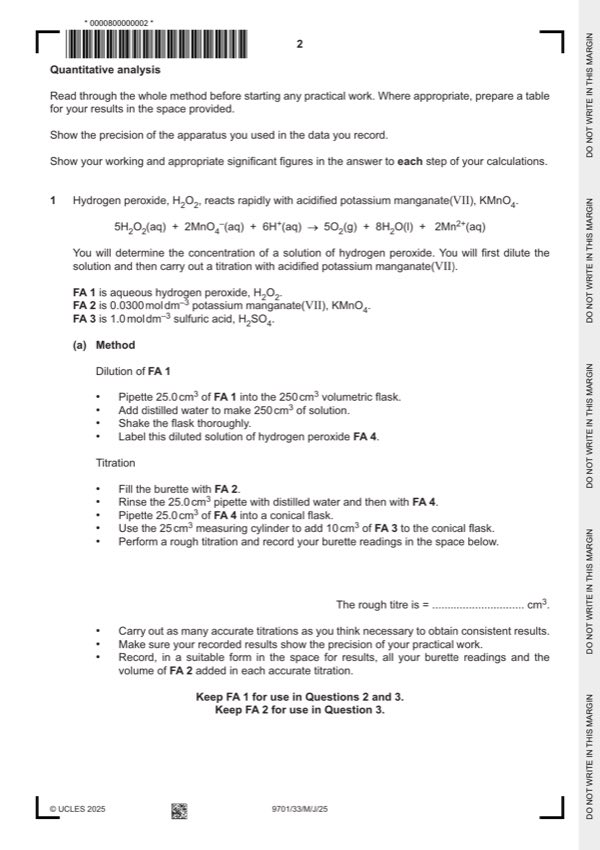
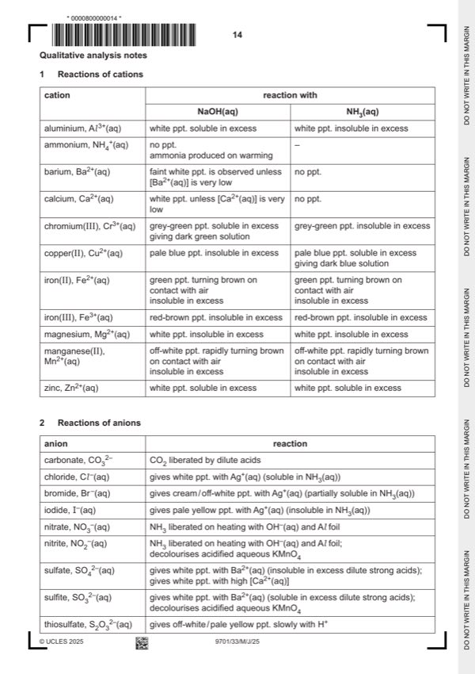

Question 1

Original paper page 2

Original paper page 14
Part 1(a) — solution
Answer: OR cm3 unit given for each volume recorded.
- two burette readings AND titre for the rough titration
- initial and final burette readings for two (or more) accurate titrations
- initial / start AND (burette) reading / volume
- final / end AND (burette) reading / volume
- titre OR volume used / added OR FA 2 used / added
- unit: / cm3 OR (cm3) OR in cm3 (for each heading)
- two (or more) accurate identical titres (ignoring any that are labelled ‘rough’), then
- two (or more) accurate titres within 0.05 cm3, then
- two(or more) accurate titres within 0.10 cm3, etc
Mark points
- two burette readings AND titre for the rough titration
- initial and final burette readings for two (or more) accurate titrations
- initial / start AND (burette) reading / volume
- final / end AND (burette) reading / volume
- titre OR volume used / added OR FA 2 used / added
- unit: / cm3 OR (cm3) OR in cm3 (for each heading)
- two (or more) accurate identical titres (ignoring any that are labelled ‘rough’), then
- two (or more) accurate titres within 0.05 cm3, then
- two(or more) accurate titres within 0.10 cm3, etc
Part 1(b) — solution
- Candidate must take the average of two (or more) titres that are within a total spread of not more than 0.20 cm3
- Working/explanation must be shown OR ticks must be put next to the two (or more) accurate readings selected
- The mean should be quoted to 2 d.p. and be rounded to nearest 0.01 cm3
Mark points
- Candidate must take the average of two (or more) titres that are within a total spread of not more than 0.20 cm3
- Working/explanation must be shown OR ticks must be put next to the two (or more) accurate readings selected
- The mean should be quoted to 2 d.p. and be rounded to nearest 0.01 cm3
Part 1(c)(i) — solution
Significant figures 1
All answers in (c)(ii) – (c)(iv) are expressed to 3 or 4 sf.
Mark points
- Include the ideas shown in the solution above.
Part 1(c)(ii) — solution
- amount of MnO4− = ((b) / 1000) 0.03 mol
Mark points
- amount of MnO4− = ((b) / 1000) 0.03 mol
Part 1(c)(iii) — solution
- amount of H2O2 = (c)(ii) 2.5 mol
Mark points
- amount of H2O2 = (c)(ii) 2.5 mol
Part 1(c)(iv) — solution
- [H2O2] = (c)(iii) 40 10 mol dm−3
Mark points
- [H2O2] = (c)(iii) 40 10 mol dm−3
Part 1(d) — solution
Answer: AND · AND · AND
- [M1] Student is not correct 2
Mark points
- [M1] Student is not correct 2